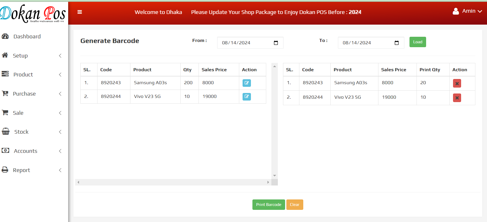

POINT OF SALE (A COMPLETE POS SYSTEM)
About POINT OF SALE
In today's digital age, using analog accounting systems can be time consuming and error-prone.
Dokan POS provides a streamlined solution that simplifies your company's accounting processes,
allowing you to focus on what is most important—spending time with your family.
Dokan POS makes it easy to manage your sales, inventory, and spending, saving you time and
stress from traditional accounting methods.
By switching to a digital POS system like Dokan Pos, you can efficiently track your transactions,
generate reports, and obtain insights into your company's performance, all while enjoying the
ease and peace of mind that contemporary technology provides.
Why is POINT OF SALE used?
A Point of Sale (POS) system is necessary for effectively managing sales transactions in a variety of retail settings. It automates the checkout process, allowing businesses to more accurately track sales, manage inventory, and streamline customer interactions. POS systems are versatile and may be tailored to a variety of enterprises, including pharmacies, grocery stores, superstores, book stores, mobile shops, and fashion boutiques. In each of these scenarios, a POS system not only speeds up transactions but also offers essential data analytics, inventory management, and customer relationship management functions, making it a must-have tool for boosting operational efficiency and customer service.
Pharmacy Pos
Super Shop Pos
Computer Shop Pos
F/E-Commerce Pos
Fashion House Pos
Dealership Shop Pos
Rod, Cement Shop Pos
Mobile Shop Pos
Server requirement
Server
Our file is compatible with any Apache.
Any other server is NOT officially supported, and we CANNOT assist with any server configuration if your server runs anything other than Apache.
PHP Version
Requires PHP from v7.4.
Although PHP v7.4 can be used with POS but later if you face any issues, the first thing which we would suggest over support ticket to you will be to fall back to PHP v7.4 as that's the only Officially support PHP version.
PHP Extensions
- OpenSSL PHP Extension
- PDO PHP Extension
- Mbstring PHP Extension
- Tokenizer PHP Extension
- XML PHP Extension
- Ctype PHP Extension
- JSON PHP Extension
- ZIP PHP Extension
- FileInfo PHP Extension
- BCMath PHP Extension
- ionCube Loader PHP Extension
- GD PHP extension
Consider enabling the OpCache PHP Extension for improved performance. It is optional but encouraged.
Laravel Version
POS requires Laravel from v7.4. to v10.0.
Although Laravel v7.4 can be used with POS but later if you face any issues, the first thing which we would suggest over support ticket to you will be to fall back to Laravel v7.4 as that's the only Officially support Laravel version.
Laravel Extensions
- Laravel blade snippets
- Laravel snippets
- Laravel Artisan
- Laravel Extra Intellisense
- Laravel goto view
- laravel-jump-controller
- laravel-goto-components
- Laravel Blade formatter
- Laravel Create View
- Laravel Blade Wrapper
- DotENV
- DevDb
Database MySQL
In a point-of-sale (POS) application, the MySQL database is critical for maintaining and organizing vital data such as products, sales transactions, inventory, customers, and workers. The database typically contains tables for storing product information (such as product ID, name, barcode, price, and stock levels), transaction records (details of each sale, including items sold, quantities, and total amounts), customer data (for tracking purchases and loyalty programs), and employee records (for managing roles and permissions). Additionally, the database allows for real-time inventory updates as sales occur, assuring proper stock management. MySQL's relational structure and indexing features enable efficient querying and reporting, allowing the POS system to swiftly retrieve and process data, resulting in smooth and accurate operations.
Employee Management
This module contains a thorough list of all employees and their information within the application.Each employee's information can be viewed and managed using the table list view. To assist revisions, a "EDIT" symbol is displayed next to each employee entry, allowing authorized users to easily modify and update employee information. The system also contains an employee role feature, which allows you to designate specific duties to each employee. Admin users may manage these responsibilities and make changes to employee information easily, ensuring that any adjustments are handled flawlessly inside the program. This functionality improves administrative control over personnel data and role assignments, resulting in a more structured and secure management process.

To modify an employee, click the "EDIT ICON ", which will open a new popup window. On that form, enter the update details and then click the update button.

To add a new employee, click the "REFISTER EMPLOYEE" button, which will open a new popup window. On that form, provide the necessary information about the employee, such as their name, mobile number, role, password, and confirm password, as well as if the employee is currently active or inactive.

Customer Management
The POS software allows the administrator to establish and manage client profiles using a dedicated module. This module contains a complete list of all clients and their information, which is saved in the program. Administrators can quickly add new customers by entering their details into the system. Furthermore, the module has a "EDIT" icon in the table list view, which allows administrators to alter and amend current customer information as needed. This guarantees that the customer database is always current and appropriately reflects any changes in customer information like employee management.

To add a new customer, click the "Add Customer" button, which will open a new popup window. On that form, provide the necessary information about the customer, such as their name, mobile number, address, district,area, and balance, as well as if the customer is currently active or inactive.

Supplier Management
The POS software allows the administrator to establish and manage client profiles using a dedicated module. This module contains a complete list of all clients and their information, which is saved in the program. Administrators can quickly add new suppliers by entering their details into the system. Furthermore, the module has a "EDIT" icon in the table list view, which allows administrators to alter and amend current supplier information as needed. This guarantees that the supplier database is always current and appropriately reflects any changes in supplier information.

To modify a supplier, click the "EDIT ICON ", which will open a new popup window. On that form, enter the update details and then click the update button.

To add a new supplier, click the "Add Supplier" button, which will open a new popup window. On that form, provide the necessary information about the supplier, such as their name, mobile number,address and balance, as well as if the supplier is currently active or inactive.

Product Management
Product management is a critical component of the application, which focuses on the administration and categorization of objects and their categories. This module is intended to streamline the complete product management lifecycle, ensuring that products are properly managed, categorized, and updated. This module is divided into two main submodules:
- Category
- Product
Category
The POS software has a powerful category administration module, which allows the administrator to efficiently organize and control product categories. This module has a full list of all categories and their associated details, which are saved within the program. Administrators can quickly create new categories by adding the necessary information into the system. The module also contains a "EDIT" icon in the table list view, which allows administrators to change and amend existing category details as needed. This guarantees that the category structure is well-organized and accurately reflects any changes in product classification, hence improving inventory management and improving product organization.

To modify a category, click the "EDIT ICON ", which will open a new popup window. On that form, enter the update details and then click the update button.

To add a new category, click the "Add Category" button, which will open a new popup window. On that form, provide the necessary information about the category, such as name as well as if the category is currently active or inactive.

Product
The POS software features a robust product module that empowers administrators to efficiently oversee and manage product details. This module provides a comprehensive list of all products and their associated information stored within the system. Administrators can effortlessly add new products by inputting relevant details such as product name, code, category,unit, sale pricing, and cost. Additionally, the module includes an "EDIT" icon within the table list view, enabling administrators to modify and update existing product information as necessary. To further streamline operations, the module also supports an "Import Product" feature, allowing administrators to bulk upload product data. The combination of manual entry, editing capabilities, and import options ensures that the product database remains accurate, up-to-date, and well-organized, facilitating efficient inventory management.

To modify a product, click the "EDIT ICON ", which will open a new popup window. On that form, enter the update details and then click the update button.

To add a new product, click the "Add Product" button, which will open a new popup window. On that form, provide the necessary information about the product, such as their name, code, category, unit,sale price and cost, as well as if the product is currently active or inactive.

To import products, click the "Import Products" button, which will prompt you to upload a CSV or Excel file. Ensure that the file contains the necessary information about the products, such as their name, code, category, unit, sale price, cost, and stock levels. Once the file is uploaded, the system will automatically process the data and add the products to your inventory. This feature allows for quick and efficient bulk product entry, saving time and reducing the likelihood of errors compared to manual entry.

Barcode
In a point-of-sale (POS) application, barcode management is crucial for speeding the checkout process and inventory control. Barcodes are unique product identifiers that can be scanned quickly and accurately during sales transactions. The system creates and assigns barcodes to each product, which can be printed on labels and attached to items. During checkout, barcode scanners read these codes to retrieve product information, update stock levels, and record sales, resulting in efficient and error-free procedures. Furthermore, barcode data is incorporated into inventory management and reporting functions, allowing for real-time tracking of product movement and improved decision-making on stock levels and sales patterns.

Purchase Management
Purchase management is a critical component of the application, which focuses on the administration and tracking of purchases and supplier relationships. This module is designed to streamline the entire purchase management lifecycle, ensuring that all procurement activities are efficiently managed, tracked, and updated. This module is divided into two main submodules:
- Purchase
- Purchase Cancel
Purchase
In a point-of-sale (POS) application, the buy management module is critical for controlling and managing the procurement process. This module simplifies the drafting and tracking of purchase orders, allowing users to efficiently obtain products from suppliers, manage inventory levels, and keep precise records of all procurement actions. Users can create new purchase orders by selecting suppliers, specifying product quantities, and establishing delivery dates.

Purchase Cancel
The "Purchase Cancel" tool allows users to conveniently cancel purchase orders. When a purchase order needs to be canceled, whether due to errors, inventory changes, or supplier issues, users can retrieve the relevant order via the Order List. When you click the "Cancel Purchase" option, the system asks for confirmation, verifying that the cancellation is intentional. Once confirmed, the system changes the order status to "Canceled," edits inventory records as needed, and communicates the cancellation to the supplier. This functionality guarantees that canceled orders are correctly reflected in the system, keeps inventory data up to date, and provides a clear audit trail for administrative use.


Inventory/Stock Management
Inventory/Stock Management is a crucial module in the application, dedicated to overseeing and controlling the inventory levels of products. This module is designed to ensure that stock levels are accurately maintained, helping to prevent stockouts and overstock situations. It provides a comprehensive approach to managing inventory, from tracking stock quantities and monitoring product movements to adjusting stock levels and analyzing inventory performance. This module is divided into two main submodules:
- Current Stock
- Minimum Stock
Current Stock
"Current Stock" function is an essential component that enables real-time visibility into the inventory levels of various products. It enables businesses to track the availability of commodities, ensuring that they can fulfill client demand without overstocking or experiencing shortages. By tracking stock quantities in real time, the POS system may immediately update inventory whenever a sale is made, assisting in the maintenance of correct records. This function also aids effective stock control by enabling automated alerts for low stock levels, resulting in timely replenishment.

Minimum Stock
Minimum stock, often known as "reorder level," helps firms manage ideal inventory levels. It indicates the number at which an item should be reordered to avoid stockouts. By specifying a minimum stock level, the system can automatically notify the user when inventory for a specific product falls below that amount. This proactive approach guarantees that important commodities are always accessible for purchase, decreases the risk of missed sales due to stock shortages, and allows firms to better manage their inventories.

Sale Management
Sale management in a Point of Sale (POS) application entails supervising the full sales process, from transaction initiation to payment completion. It include monitoring real-time sales data, controlling product inventory, processing customer transactions, and creating receipts. Effective sale management guarantees that organizations can monitor sales trends, modify pricing, manage discounts, and handle returns or exchanges smoothly. A well-designed POS system also connects with other business operations like inventory management, accounting, and customer relationship management (CRM), giving a complete solution for increasing sales and customer satisfaction. This module is divided into two main submodules:
- Sale
- Sale Cancel

Account Management
Account management is critical to guaranteeing secure and efficient transactions. It entails creating and maintaining user accounts, with each account having unique roles and permissions based on the user's job within the business. This system enables administrators to manage access to various functionalities such as Expense, Collection, and Payment. Effective account management also involves password protection, user activity tracking, and account-level security settings to prevent unwanted access. Implementing strong account management ensures that only authorized workers can undertake key actions, preserving the integrity and security of the company's financial and inventory data. This module is divided into two main submodules:
- Expense
- Collection
- Payment
Expense Management
Expense management is critical to preserving financial control and corporate prosperity. This function enables businesses to monitor and control all operational costs, including inventory, employee wages, electricity bills, and other overheads. An successful expense management system connects smoothly with sales data, delivering real-time information about profit margins and cost efficiency. It assists firms in making educated decisions by providing detailed information on expenditure trends, suggesting areas for cost savings, and ensuring that all expenses are appropriately accounted for.This module is divided into two main submodules:
- Expense List
- Expense Type

Collection Management
Collection management entails accurately tracking and managing customer payments and transactions. It includes the process of documenting sales, accepting various payment methods (cash, credit, debit, and digital payments), and ensuring that all financial transactions are correctly recorded in the system. Effective collection management enables firms to track revenue in real time, manage overdue balances, and provide thorough sales and collection statistics. It also interfaces with inventory and customer management modules to ensure a smooth flow of data, resulting in enhanced decision-making and financial supervision.

Payment Management
Payment management is critical for enabling seamless and safe financial transactions in a retail setting. This feature often includes a variety of payment options, such as cash, credit/debit cards, mobile payments, and digital wallets, allowing users to select their preferred way. The system should be linked with payment gateways to allow for real-time transaction processing and settlement. Furthermore, effective payment administration involves features such as split payments, refunds, and discounts, as well as extensive reports for tracking sales and keeping financial records. Encryption and payment standard compliance, such as PCI DSS, are critical security measures for protecting sensitive consumer data and preventing fraud.

Reports
For appropriate business analysis and decision-making, the system offers managers and business owners a variety of business reports. The system generates the following primary reports:
-
Purchase Report

-
Product Report

-
Employee Report

-
Sale Report

Our Services
At Creative Software Bangladesh, we provide an entire Point-of-Sale (POS) solution that will streamline your retail operations and improve your client experience. Our POS application is designed to fulfill the different needs of businesses, ranging from tiny shops to major retail chains. Here's why our service stands out:
- Product Purchase: Use our Product Purchase service to streamline your procurement process. Manage and record all of your incoming inventory with simplicity. Monitor supplier information, purchase orders, and received goods to ensure that your stock levels are constantly ideal. Automate and monitor the entire purchasing process to avoid overstocking and stockouts, which will improve your overall operational efficiency.
- Product Sales: Increase your earning potential with our full Product Sales capability. Our POS system allows you to conduct sales transactions swiftly and correctly. With capabilities such as barcode scanning, receipt creation, and real-time sales tracking, you can easily manage your sales activities. Customize pricing, provide promotions, and accept a variety of payment options to provide your consumers with a simple checkout experience.
- Expense Management: Our Expense Management solution makes it simple to keep track of all your business spending. Keep track of and categorize expenses such as utilities, rent, salary, and so on. Create detailed cost reports to assess spending habits and make sound financial decisions. Our technology provides total visibility into your financial outflows, allowing you to stay on budget and maximize cost management.
- Stock/Inventory Management: Maintain control over your inventory with our robust Stock/Inventory Management tools. Monitor stock levels in real-time, set up automated reordering alerts, and manage stock across multiple locations. Our system provides insights into stock movements, helps prevent stock discrepancies, and supports efficient inventory turnover. With accurate stock tracking, you can reduce excess inventory and improve cash flow.
- Profit/Loss Analysis: Our Profit/Loss Analysis service provides significant insights into your company's financial health. Track and analyze your revenue, costs, and profits to evaluate your company's success. Prepare comprehensive profit and loss accounts to discover patterns, assess profitability, and make strategic decisions. Our technology offers you with actionable data to assist you achieve growth and profitability.
Our Packages
Our Point of Sale (POS) package is a comprehensive solution that streamlines sales transactions and inventory management for businesses of all sizes. The package includes real-time sales tracking, barcode scanning, and thorough reporting to provide meaningful insights into sales performance and inventory levels. It accepts different payment methods, interacts effortlessly with existing accounting systems, and enables for bespoke pricing and discount strategies. Additionally, the POS system is user-friendly, with a simple layout that makes staff training easier. Advanced inventory management features provide effective stock control, while built-in analytics enable firms to make educated decisions and optimize their operations.

FAQ
A FAQ is a list of frequently asked questions (FAQs) and answers on a particular topic.
Credits & Resource
- Each code is considered property for the Creative software. The project will be delivered to clients for uses only.
- This project is not marketable and can only be used. If proof of sale is found, you can take action in accordance with the software law.
- © 2024 Creative Software. All Rights Reserved.
Support
This Service maintenance will cover following services:
- Online Training
- Online Support
- Pay to visit and get support